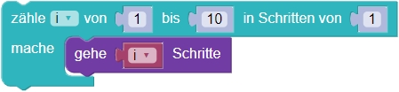

Ornamente
Die Schildkröte soll die eckige Spirale zeichnen.
Bitte schau dir vorab die Erläuterungen der Bausteine unter "weitere Hinweise" an.
Bitte schau dir vorab die Erläuterungen unter "weitere Hinweise" an.
Weitere Hinweise:
Beim zähle-Baustein durchläuft die Zählvariable i einen Zahlenbereich von einem Anfangswert
bis zu einem Endwert. Die Anweisungen innerhalb des Bausteins werden für jeden Durchlauf einmal
ausgeführt. Am Ende des Durchlaufs wird i um 1 erhöht.
Im folgenden Beispiel ist der Anfangswert 1 und der Endwert 10. i wird am Ende des Schleifendurchlaufs um 1 erhöht. Das heißt: im 1. Durchlauf geht die Schildkröte 1 Schritt, im 2. Durchlauf geht sie 2 Schritte, usw.

Weitere Hinweise:
Bisher haben wir range immer mit einer for-Schleife verwendet, um Befehle zu wiederholen z.B. 3-Mal.
Genau genommen beschreibt range() einen Zahlenstrahl. Schreiben wir z.B. range(5), so sind damit die fünf Zahlen 0, 1, 2, 3, 4 gemeint. Python beginnt nämlich immer bei 0 mit dem zählen! Somit wird
for i in range(10):
rechts()
genau 10-Mal ausgeführt wird, da die Variable i den Wert 0 bis 9 einnimmt.
range() kann anstatt mit einem Parameter auch mit zweien bis dreien aufgerufen werden. Mehrere Parameter trennen wir durch Kommata:
range(start,ende,schritt)Dabei steht
start für den Startwert, ende für den Endwert und schritt für die Schrittweite.
Ein Beispiel:
for i in range(1,10,2):
geheSchritte(i)
In jedem Durchlauf nimmt die Variable i einen Zahlenwert in dem Bereich an, den range() beschreibt.
Das heißt: im 1. Durchlauf ist i 1 (start) und die Schildkröte geht 1 Schritt.
Im 2. Durchlauf ist i 3, da schritt 2 ist, und die Schildkröte geht 3 Schritte.
Dann geht sie im 3. 5, im 4. 7, im 5. 9 und dann beendet die Schleife.
Wenn wir also:
- Einen Parameter übergeben: z.B.
range(10), so istendefestgelegt und wir beschreibend den Zahlenraum 0 bis 9.startist standardmäßig 0 undschritt1. - Zwei Parameter übergeben: z.B.
range(5,10), so sindstartundendefestgelegt und wir beschreibend den Zahlenraum 5 bis 9.schrittist also standardmäßig 1. - Drei Parameter übergeben: z.B.
range(5,10,2), so sindstart,endeundschrittfestgelegt. Wir beschreibend den Zahlenraum 5,7, 9.
Die Spirale hat 17 Linien. Die erste Linie ist 1 Schritt lang. Die anderen Linien sind jeweils einen Schritt länger als die vorherige Linie.
Die Schildkröte soll die eckige Spirale zeichnen – diesmal von außen nach innen.
Bitte schau dir vorab die Erläuterungen der Bausteine unter "weitere Hinweise" an.
Bitte schau dir vorab die Erläuterungen unter "weitere Hinweise" an.
Weitere Hinweise:
Der Anfangswert im zähle-Baustein kann auch größer sein, als der Endwert. Die Zählvariable i wird dann um 1 verringert.
Im folgenden Beispiel ist der Anfangswert 10 und der Endwert 1. i wird am Ende des Schleifendurchlaufs um 1 verringert. Das heißt: im 1. Durchlauf geht die Schildkröte 10 Schritte, im 2. Durchlauf geht sie 9 Schritte, usw.

Weitere Hinweise:
Ist dir nicht klar, wie range() Funktioniert, so lies die weiteren Hinweise bei der zwei-Sterne Version noch einmal.
Der Anfangswert in der range()-Funktion
kann auch größer sein, als der Endwert.
Als Schrittweite muss dann allerdings ein negativer Wert angegeben werden.
Im folgenden Beispiel ist der Anfangswert 10 und der Endwert 1. i
wird am Ende des Schleifendurchlaufs um 1 verringert.
for i in range(10,1,-1):
geheSchritte(i)
Das heißt: im 1. Durchlauf geht die Schildkröte 10 Schritte, im 2. Durchlauf geht sie 9 Schritte, usw.
Die Schildkröte soll die eckige Doppel-Spirale zeichnen – zuerst von außen nach innen, dann von innen nach außen.
Weitere Hinweise:
Ist dir nicht klar, wie range() Funktioniert, so lies die weiteren Hinweise bei der zwei- und drei-Sterne Version noch einmal.